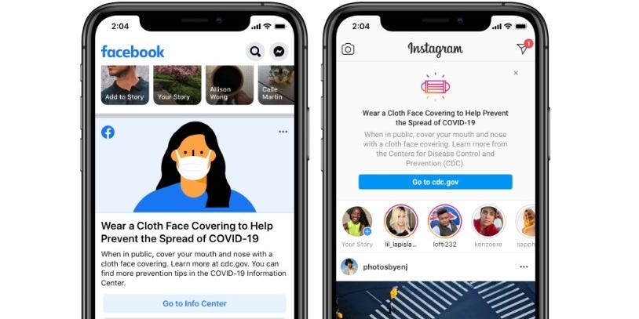

Media Literacy
Social media has had a very large effect on people’s opinions about the coronavirus pandemic. Many guidelines have been put in place to keep people safe such as mask mandates, social distancing rules, and health screenings. Lots of people have enjoyed sharing their opinions about these guidelines and restrictions on social media platforms. This can be good because it helps people feel heard, but it can also cause polarization. In an interview with TIME, Jeff Hancock says “They’re allowing society to sort of talk its way through what is an unprecedented kind of threat.” (de la Garza, 2020). In uncertain times like these, it is important that people have a way to speak about their opinions. News can spread very fast on these platforms, so that makes it easy to change a person’s views. Some social media companies have advertisements to remind people to be safe. However, not only companies are helping. Small and large accounts are reminding people to wear masks and stay socially distanced. That being said, sometimes arguments can spark. There is a surprisingly large number of people who believe that the pandemic is not real, and that masks and other safety precautions are unnecessary. In public posts, the comment section can have arguments between these two groups. Overall, social media can help people spread their opinions, but it can also divide people throughout the world.